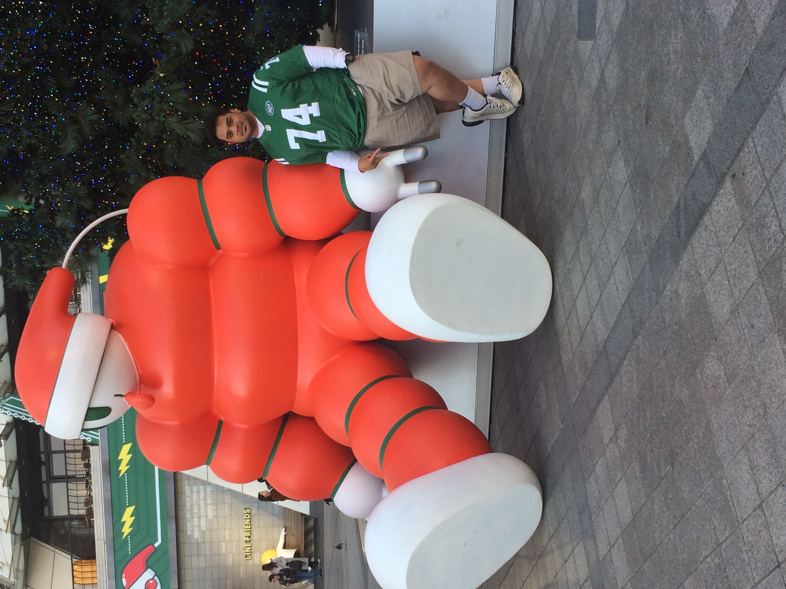

Hershyl Seumanu | WDD 130
Hi my name is Hershyl and I am from Auckland, New Zealand. I have a wife and three young children under the age of five. They are my favorite people to be around becuase they are very entertaining! I enjoy listening to a wide variety of music and through this enjoyment I was able to teach myself how to play the piano/keyboard by ear. I love to watch and play sport, mostly contact sport like Rugby, Football, Boxing and Basketball. I love to cook outdoors such as barbeques or in my culture(Samoa) we have a traditional way of cooking which is 'umu' or an earth oven style of cooking. I have a great fascination for the scriptures especially the Book of Mormon. I admire the stars and planets in the within and outside of our Solar system because, to me, they are a witness of God's eternal power and majesty. I find my greatest moments of peace when I am outdoors, admiring the natural beauty of the earth. I believe that the family was designed by God for us to experience joy and laughter and to feel safe, loved and supported. If I had one of my many wishes granted, it would be that everyone person born into this Earth would be born into a loving and happy family.